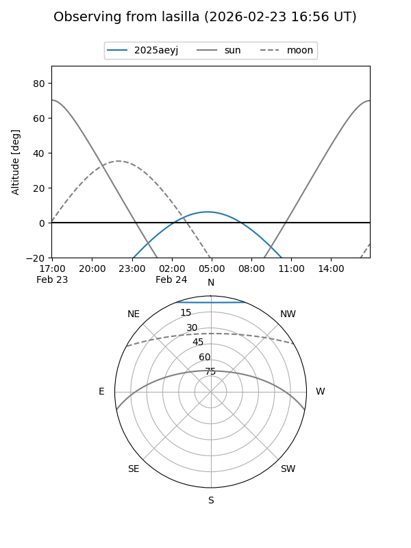
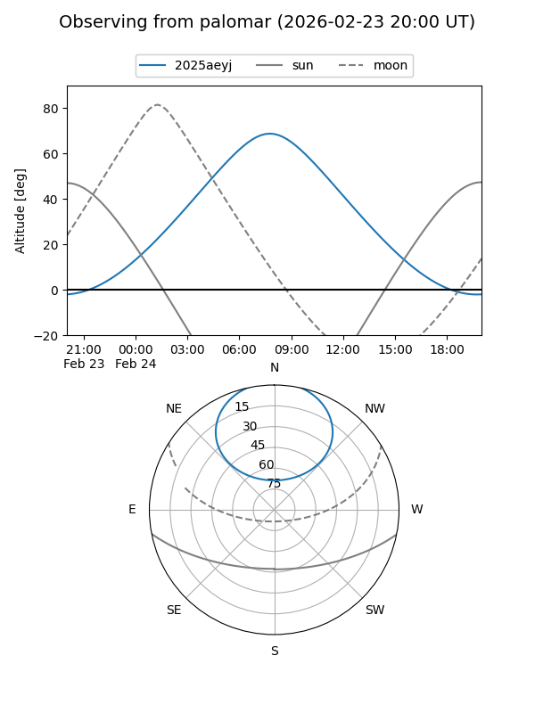
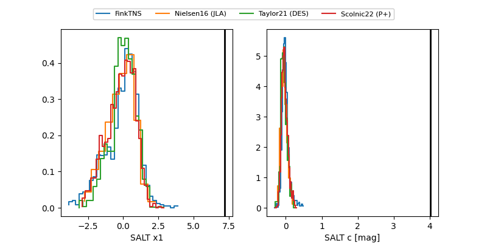

2025aeyj
Target 2025aeyj at 2025-12-31 17:59
Aliases and brokers:
FINK: link
Lasair: link
ALeRCE: link
TNS: link
YSE: link
alt names
ZTF25accfxjr (ztf,fink_ztf)
2025aeyj (tns,yse)
PS25kui (panstarrs)
Coordinates:
equatorial (ra, dec) = 153.3839,+54.67983
equatorial (HMS+DMS) = 10:13:32.15,+54:40:47.39
galactic (l, b) = (158.0472,+50.28441)
Flags:
Photometry:
last ztfr=20.19
5 ztfr detections
Lightcurve

Visibility


Additional plots
